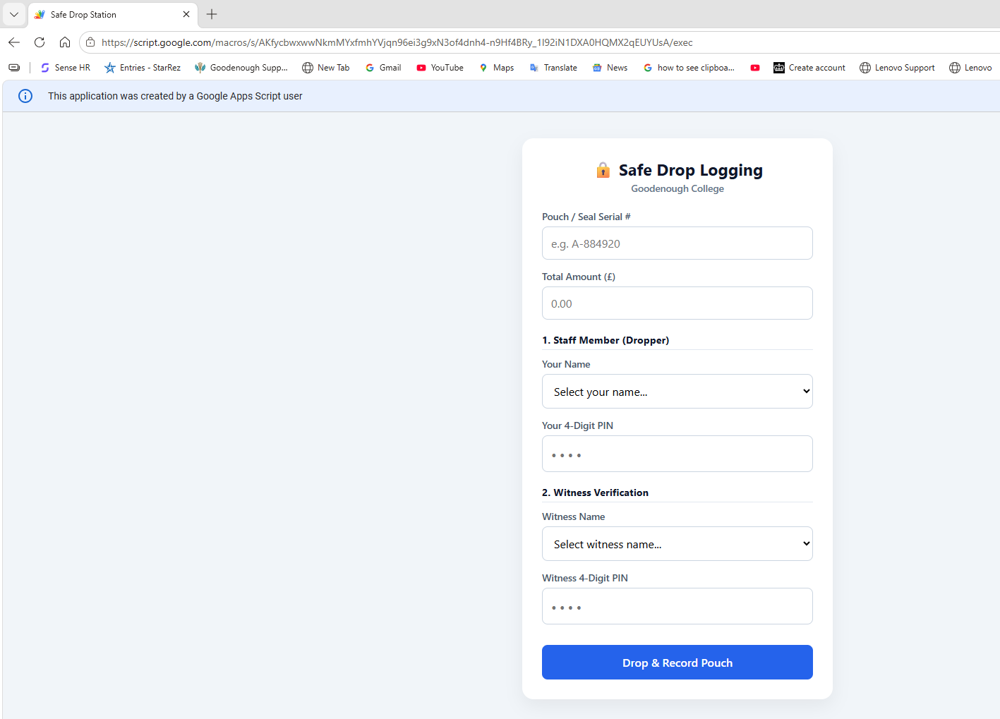

I bridge the gap between day-to-day operations and digital efficiency. I specialize in identifying operational bottlenecks and building custom, automated tools to save time, reduce human error, and improve security.

Tech: HTML/CSS | JavaScript | Google Apps Script
Beyond operational management, I am passionate about digital storytelling and communication. I manage end-to-end media production workflows, bridging the gap between engaging content and audience strategy.
Actively pursuing advanced industry certifications to build upon my hands-on facility management experience.
Strategizing e-commerce opportunities and researching the end-to-end logistics of international retail.
When I am not streamlining operations or writing code, I enjoy exploring the outdoors. You will usually find me hiking coastal paths and walking the grounds of historic National Trust sites, or out on the road touring on my classic-style Royal Enfield motorcycle.